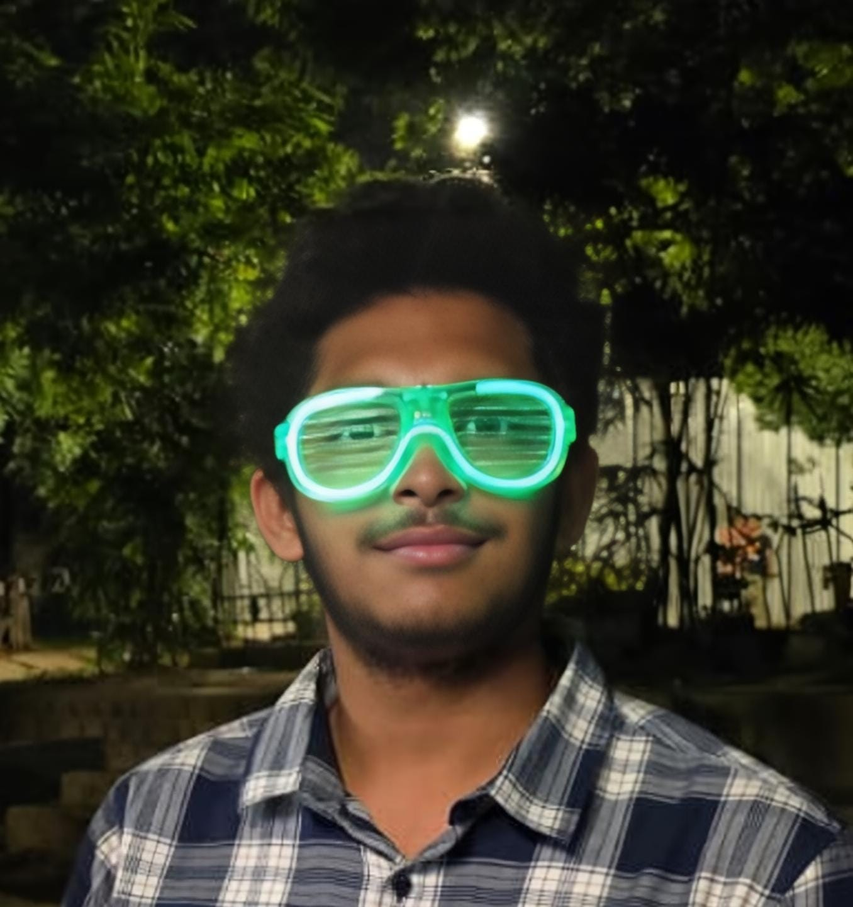

About Me

Hey, I'm Nara Lakshmi Sankeerth. I'm someone who's really into technology and enjoys building things that actually work in the real world. I'll be studying at International Institute of Information Technology, Hyderabad, and I'm excited to explore more about computer science and push my skills further.
I'm especially interested in web development and IoT. I like creating projects where hardware and software come together—things like sensor-based systems, automation, and interactive applications. Whether it's designing a clean website or building a smart device, I enjoy the whole process of turning an idea into something real. I also care a lot about how things look and feel, so I try to make my projects both functional and user-friendly.
Apart from that, I enjoy solving problems, experimenting with new ideas, and just figuring out how things work behind the scenes. I usually learn by doing—trying things out, messing up, and improving along the way. I’m always curious about new tech and like staying updated with what's happening in the field.